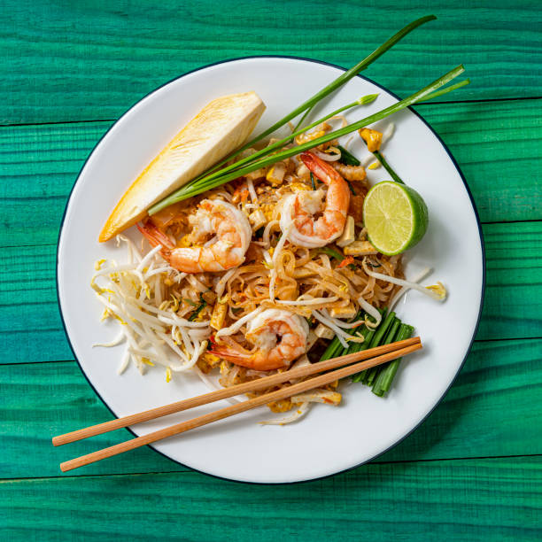

Pad Thai

Description
If you’re like me, you’ve spent many a Saturday night with friends, beers in hand, surrounded by half a dozen take-out containers of red curry, green papaya salad, pad see ew, and my personal favorite, pad Thai. It’s always a must-order, which is why it’s especially disappointing to get a lackluster one. Not to worry—your days of too-sweet sauce, gummy noodles, or overcooked protein are over. With just a few special ingredients, you can make this subtly sweet, tangy, nutty, and salty Thai dish, right at home, exactly how you like it.
Ingredients
- 8 oz. rice noodles, broken in half
- 6 Tbsp. peanut or vegetable oil, divided
- 1 lb. medium shrimp, peeled, deveined, tails removed
- 3 large eggs
- 3 Tbsp. palm sugar
- 3 Tbsp. Thai fish sauce
- 2 Tbsp. tamarind puree
- 1 Tbsp. fresh lime juice, plus lime wedges for serving
- 1/4 tsp. cayenne pepper
- 1 medium shallot, finely chopped (about 3 tbsp.)
- 3 cloves garlic, finely chopped
- 6 scallions, cut into 1" pieces
- 1 c. bean sprouts
- 1/4 c. coarsely chopped peanuts
- 2 Tbsp. coarsely chopped fresh cilantro (optional)
Steps
-
If using dried noodles, in a large pot or heatproof bowl, soak noodles in boiling water until tender, 20 to 30 minutes.
-
Meanwhile, in a large wok over high heat, heat 1 tablespoon oil. Add shrimp and cook, turning halfway through, until just cooked through and pink, 2 to 3 minutes. Transfer to a medium bowl.
-
In same wok, heat 1 tablespoon oil. In a small bowl, whisk eggs until blended. Cook, stirring occasionally and breaking up curds with a spoon, until just set, 1 to 2 minutes. Transfer to bowl with shrimp.
-
In a small bowl, whisk palm sugar, fish sauce, tamarind concentrate, lime juice, cayenne, 2 tablespoons oil, and 1 tablespoon water until combined.
-
In same wok over medium-high heat, heat 2 tablespoons oil. Cook shallot and garlic, stirring frequently, until lightly golden, about 1 minute. Add scallions and cook, stirring frequently, until softened, 1 to 2 minutes. Stir in sauce and bring to a simmer.
-
Add eggs, shrimp, and noodles and cook, tossing constantly, until warmed through and noodles are softened, about 2 minutes more. Add bean sprouts and peanuts and toss again to combine.
-
Divide pad Thai among plates. Top with cilantro (if using).